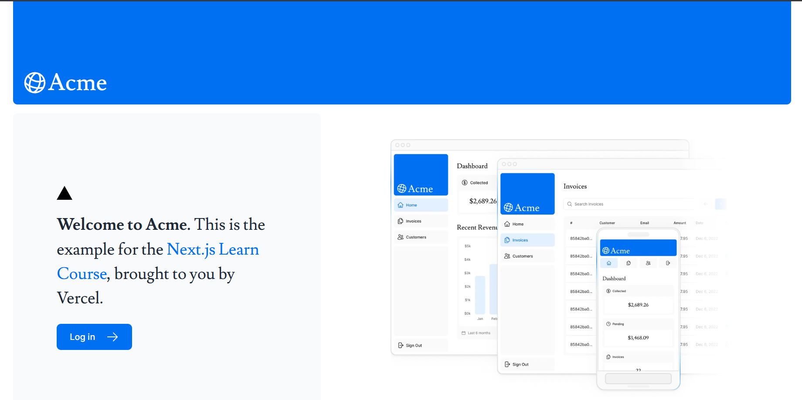
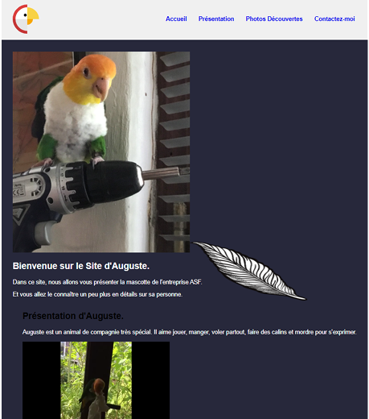
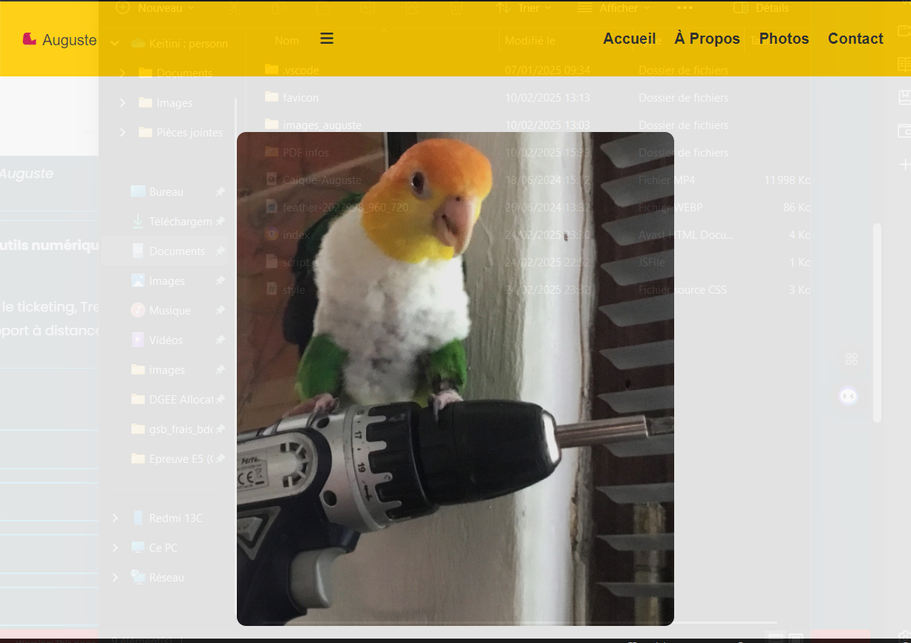
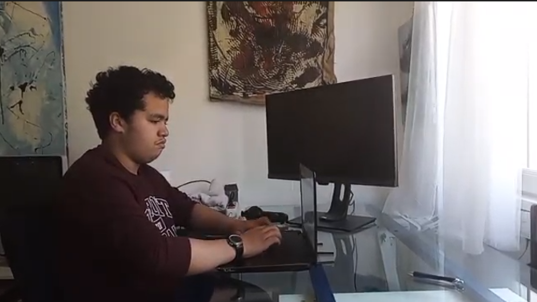

Stage de Première Année – DCSI de Quimper
📌 Présentation de l'association
L’AASF (Amicale des Artistes Sans Frontières) est une association à but non lucratif qui promeut les artistes du monde entier, grâce à des expositions, des réseaux de mise en relation, et un futur réseau social artistique. Son financement repose uniquement sur des dons et cotisations.
💼 Missions réalisées
Stage 1.
📀 Site Pseudo/Portfolio
▶J’ai crée un portfolio pour me présenter en générale pour mieux valoriser mon entrée en tant que Développeur.
🛠️ Site Next.JS en apprentissage
▶Un site exemplaire pour apprendre le Next.JS en profondeur en se basant sur l'apprentissage avant les cas de pratiques concrets.
Légende : Application Next.JS côté client
📦 Version 1 du Site Mascotte Auguste
▶J'ai crée le site pour présenter au mieux la mascotte de l'Entreprise "Auguste".
Légende : Site Web Auguste
Stage 2.
🎁 Site vitrine pour locations de chambres.
▶Remise à neuf de postes (formatage, réinstallation, nettoyage physique) en vue de dons à d’autres associations locales.

Légende : Site Web Auguste
🧰 Site Refonte Web d'Auguste
▶J'ai reformé et recrée les codes de base du site Auguste pour une meilleure visibilité .
Légende : Site Web Auguste Refonté
🧑💻 Compétences mobilisées
Inventaire avec GLPI, suivi des équipements, attribution aux utilisateurs et documentation rigoureuse.
Installation et configuration de systèmes d’exploitation, logiciels bureautiques, accès réseau et périphériques.
Interventions sur site et à distance (LogMeIn), résolution de pannes, réactivité et écoute utilisateur.
Interventions sur site et à distance (LogMeIn), résolution de pannes, réactivité et écoute utilisateur.
📷 Espace de travail
Poste bureautique avec PC branché sur Câble HDMI.